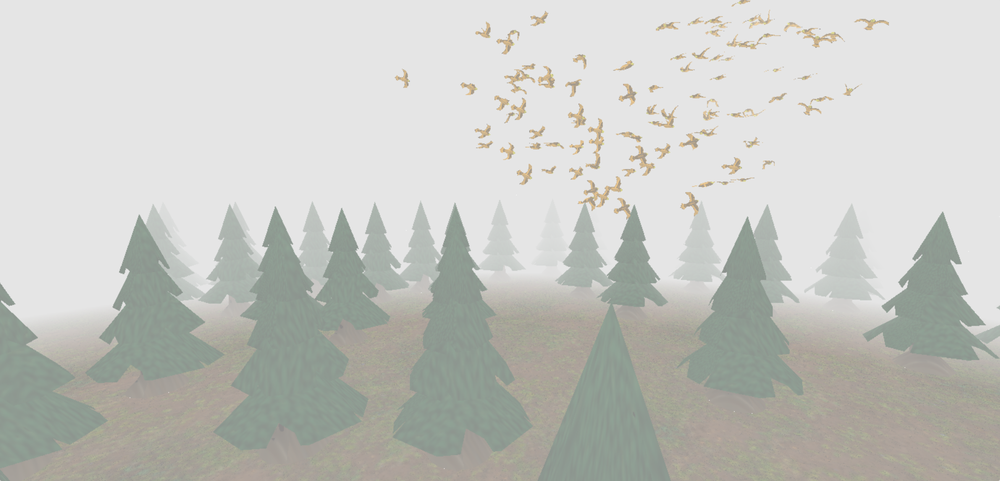
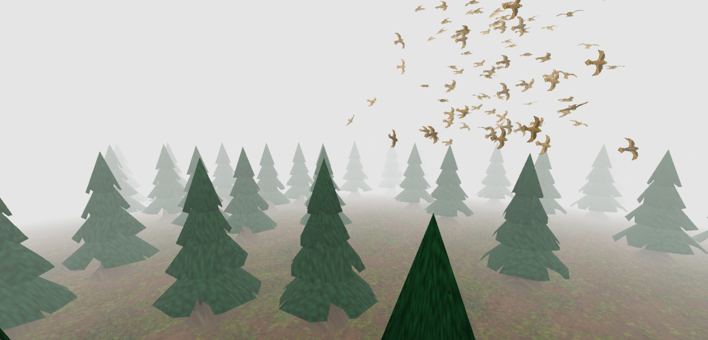
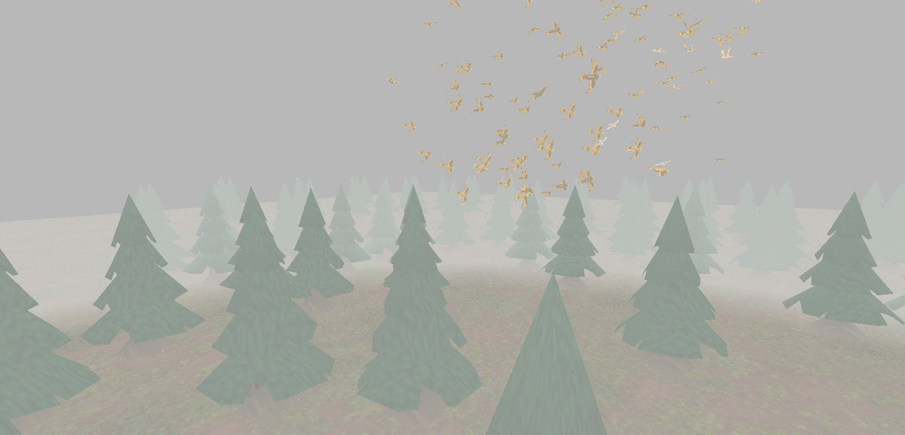
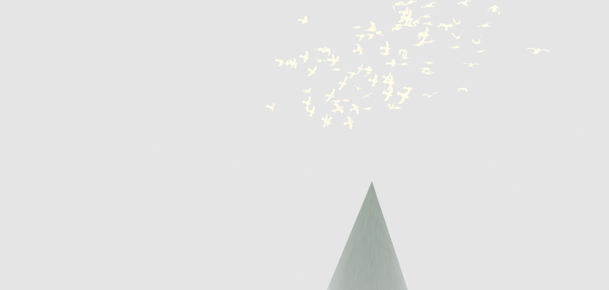
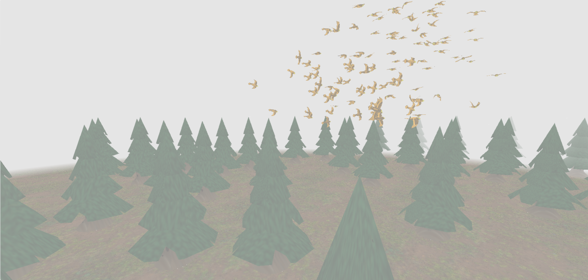
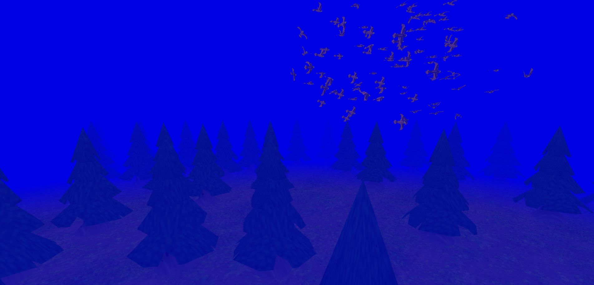
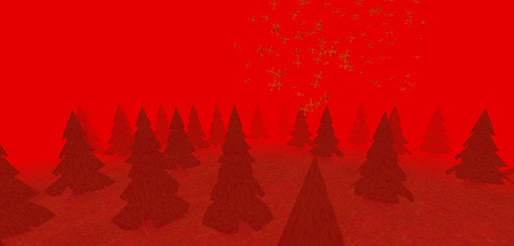
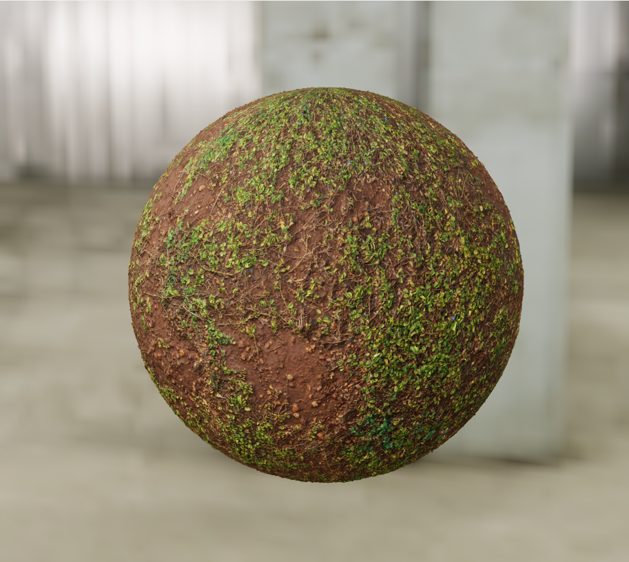
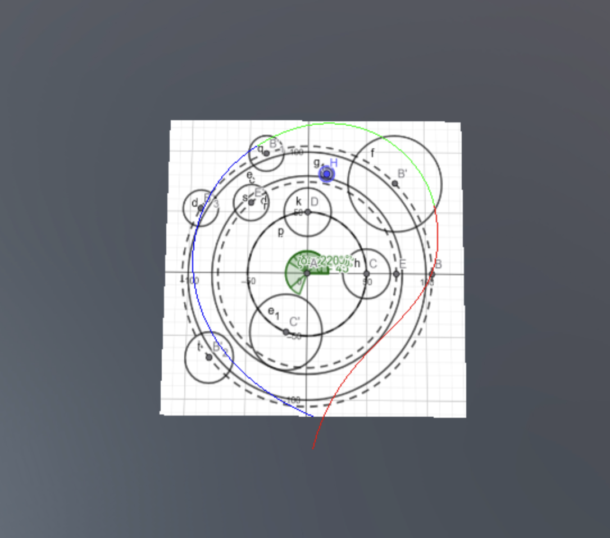
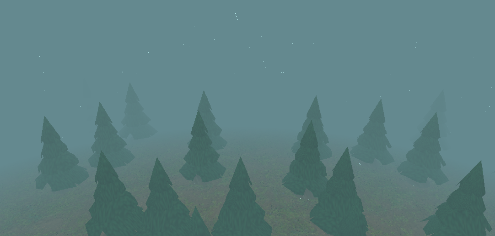

In Flight
Abstract
The goal of our project, “In Flight,” is to create a dynamic and visually engaging 3D scene showcasing bird animation and flocking behavior. We aimed to implement the boids algorithm to simulate the behavior of a flock of birds flying through a forest filled with pines swirling in between them and dodging them to create a movie-like scene which is the video referenced below in our Resources section.
Overview
As described earlier in the abstract, our goal was to create a scene of birds flying through a forest in a realistic manner. To accomplish this, we implemented a boids algorithm to simulate the behavior of a flock of birds. We added the classic forces of a Boids-like algorithm (avoidance, cohesion, alignment and containment) while also adding some more features which will be further described in our feature validation of this effect. The second feature we decided to implement was to design our own custom meshes, namely the birds and the trees. We did so using Blender and tutorials on how to proceed in order to have a nicer result. The third feature we added was Normal Mapping to have more visually complex and realistic appearance for our low-polygon models. The fourth feature was the implementation of fog in our scene. This was important for the immersion of the scene as it hides the edges of the “map”, while adding a cinematic and mysterious look to the scene. The fifth and final feature was Bezier curves that were used to create a smooth camera path to follow the birds in flight like in the movie clip that inspired us.
Feature validation
| Feature | Adapted Points | Status |
|---|---|---|
| Mesh and Scene Design | 5 | Completed |
| Normal mapping | 10 | Completed |
| Fog | 5 | Completed |
| Boids | 20 | Completed |
| Bezier curves | 10 | Completed |
Mesh Design
Implementation
We designed our meshes in Blender, mainly by following tutorials on YouTube (Pine tree tutorial, Tree tutorial, Bird tutorial). These were very helpful as it was our first/second time working with Blender and helped us achieve a good visual result while managing the object complexity. We won’t detail the steps taken for every mesh as the tutorials give a very solid explanation on how to proceed. We opted to not use other tree models/other meshes than our pines as when testing with more variations the resulting forest looked very weird and unnatural because the tree models don’t blend well together.
Validation


Note: The above objects are not exhaustive of all the meshes we created. All the meshes can be found in our assets folder
Fog
Implementation
We implemented the fog in the blinn phong shader, as suggested by the tutorial provided in the project instructions. The fog is rendered by mixing the color of the fog with the color of each fragment without the fog. The intensity of the fog at a given fragment is given by the distance of this fragment from the camera. First we need to input the fog color, a minimum and maximum distance values and a minimum and maximum intensity values to the pipeline. Every fragment closer to the camera than the minimum distance threshold will have the minimum intensity fog and every fragment further from the camera than the maximum distance threshold will have fog corresponding to the maximum intensity value. Between these two thresholds we used linear interpolation to calculate the fog intensity. These calculations happen in the fragment shader after the color of the fragment without any fog has been computed. The distance of the fragment from the camera is the length of the vector representing the fragments position in view space, as in this space the camera is at the origin. The weight to mix the the fog color with the fragment color is simply the intensity calculated.
Validation

The parameters for the fog in the final scene are : minimum intensity = 0.6, maximum intensity = 1, minimum distance threshold = 1, maximum distance threshold = 7.2, color = (0.9, 0.9, 0.9).
Below, you can see the effect of modifying each parameter individually. Note that when maximum intensity is below 1, we can see the edge of the ground plane, underlying the importance of the fog.






Normal Mapping
Implementation
We implemented the mapping based on the course material and the example
provided in the instructions for the project. We implemented the normal
mapping directly in the Blinn Phong shader renderer as it required only
small adaptations. Moreover, a normal map is just a texture, so it made
sense to obtain the normal mapping data of each fragment at the same
time as its color. To calculate the modified normal of each fragment, we
need the normal map texture, the position of the fragment on this
texture, the original normal of the fragment as well as its tangent and
bitangent. We created a new material called “NormalTexturedMaterial”
which takes two parameters, a texture and a normal map. The UV mapping
of the fragment coordinates is the same as for the texture, so no new
code had to be added. The “.obj” files representing our meshes only
store vertex normals, so in order to get tangents and bitangents we need
to calculate them. This is done when loading the mesh from the file in
cg_mesh. We then pass the vertex normal tangent and
bitangent to the vertex shader where we interpolate all three before
passing them to the fragment shader where the final computation is done
following the formula seen in the lectures :
n = normalize(x * t + y * b + z * n); where x,y and z are
the three values obtained from the normal map.
Validation
As shown below we have 1 implementation where we turned off normal mapping (which gives a texture without any details, as it should), next to it we have our implementation of the texture where we added normal mapping and finally for reference we have the original sphere from PolyHeaven, where the texture and the normal map come from. As we can see the mapping adds details, contrast to the texture and helps soften the transition from light to shadow.



Boids
Implementation
Our Boids algorithm simulates the flocking behavior of birds by applying a set of rules to each individual boid (bird) in the simulation. Each boid has a current position and velocity. In each step of the simulation, a new velocity is calculated for every boid based on several influencing forces, and its position is then updated. These are the forces we used which are based on a previous lab done by us in a previous course (CS-214) :
The
avoidanceForcefunction checks for other boids within a definedavoidanceRadius. If a nearby boid is detected, a repulsive force is generated, pushing the current boid away from it. The strength of this repulsion is inversely proportional to the distance (stronger for closer boids) and is capped byavoidanceForceLimitto prevent excessively strong reactions.The
cohesionForcefunction calculates the center of mass of neighboring boids within aperceptionRadius. It then generates a force vector pointing from the current boid’s position towards this perceived center. ThediffFromMeanPerceptionFilteredhelper function is used to find this average position of neighbors.The
alignmentForcefunction calculates the average velocity of neighboring boids within theperceptionRadius. It then generates a force that attempts to steer the current boid towards this average velocity. Again,diffFromMeanPerceptionFilteredis used, this time to average the velocities of neighbors.The
containmentForcefunction keeps the boid in a certain boundary by applying a force to the boid if it is out of the predefined areas to bring it back. This function is quite complex in our implementation as we defined a boundary so that all birds follow a general corridor through the forest. We first define the boundaries in the x and y plane. After that we also created boundaries for the boid height by checking the z coordinate. Usually the force applied to a boid out of the predefined zone is normal to the boundary “wall”. However, as we wanted the birds to move forward through the forest and not bounce between the “walls” we rotated the force applied (by a specified angle) to push the birds forward. Here is a more detailed explanation of the different elements of this function:- “Cylinder” Definitions: The cylinder helper function defines cylindrical zones, each with a center in the XY plane, a radius, and a preferred direction of movement (trigonometric or inverse) for boids interacting with it. We call these exclusion zones cylinders as all checks are done on the horizontal distance of the boid to the center “axis” of the exclusion zone.
- Cylinder Interaction: The cylinderCheck function determines if a boid’s XY position is within a cylinder. If so, it applies a force to steer the boid out of the cylinder and along the cylinder’s edge in the specified direction.
- Quadrant-Specific Logic: The containment logic is divided into quadrants based on the boid’s angle around the Z-axis. Different sets of guiding cylinders are active in different quadrants, creating a complex, predefined flight path (shown in the challenges section).
- Global Boundaries: There’s a global outer radius to prevent boids from flying too far away and an inner radius to keep them from collapsing into the origin.
- Z-Axis Containment: Simple upper and lower limits are enforced on the Z-axis, pushing boids back towards the median flight altitude if they stray too high or too low.
Putting everything together: The forces calculated
from Avoidance, Cohesion, Alignment, and Containment are each multiplied
by their respective weights
(avoidanceWeight, cohesionWeight, alignmentWeight, containmentWeight).
These weights determine the relative influence of each behavior which is
demonstrated below in the attached videos. The weighted forces are
summed up to get a net acceleration vector. This acceleration is then
added to the boid’s current velocity (scaled by the timestep
dt) to compute the new velocity. The boid’s speed is always
clamped between a lower and an upper bound. The upper bound can
temporarily increase if the boid is lagging behind the average angular
position of the flock, helping it catch up.
The forces weights and the evolveBoid function are defined in boids.js. The evolveBoid function is then called by each bird (defined as an actor in the scene) in evolve function.
Validation
The above video showcases how our boids behave when the area they can
evolve in is a simple and symmetric shape. This is to clearly see their
interactions without the added complexity of the trajectory. This scene
can be found in the file named boidsDemo_scene.js. We
created a copy of our boids.js file (boidsDemo.js) to be
able to modify the containmentForce and the weights for the demos
without affecting the final scene. We also increased the number of boids
to 200 for this demonstration to clearly show the interaction of a big
flock.
As we can see in the video the boids behave as expected. Below we show what happens when adjusting the weights of certain forces so that you can better observe their effects on the boids.
In this second video we increased the max speed our boids could have by 1/3 and also multiplied the avoidance by 6 to better showcase how the forces work. As we can see, the boids’ behavior seems more erratic, this is simply due to the fact that the outputted force when two birds get too close to each other is much bigger which is why some boids change directions very quickly. The speed increase is also noticeable as the boids seem to fly around much faster.
In this third video we doubled both the alignment and cohesion weights again to better showcase their effects. As can be seen, the birds now seem to split into two groups (which is the way we make them spawn) and, contrary to the other two videos, they stay packed quite close together in these two groups throughout the video which is simply due to the fact that the forces attracting them together is much stronger and thus overshadow the other forces affecting the boids.
These three videos showcase the effects of all forces well and how they work all together to create a cohesive result. We decided not to include videos for other parameter configurations to keep this section somewhat concise as there are too many options.
Bézier Curves
Implementation
To create a smooth and predefined camera path for our scene, we
implemented a system based on Bézier curves. To implement this we mainly
used the reference given in the handout for bezier curves. Our
approach, primarily managed within bezier.js, involves
defining the camera’s trajectory using three distinct cubic Bézier curve
segments. Each segment corresponds to a specific time interval in our
animation (0-9.72s, 9.72-17.22s, and 17.22-30s), allowing for varied
camera movements over time.
For each segment, the camera’s 3D position is determined by evaluating the corresponding Bézier curve at the current animation time. To ensure the camera orients itself correctly along the path, we also calculate the curve’s tangent (its first derivative) at that point. This tangent vector provides the direction the camera should be looking. We focused on ensuring smooth transitions between these segments to avoid abrupt camera movements.
A specialized BezierCamera class was developed to handle
this logic. Each frame, this camera updates its position and orientation
based on the active Bézier curve segment and the current time. It then
computes the necessary view matrix, which is used to render the scene
from the camera’s smoothly moving perspective. This method allowed us to
achieve the desired cinematic camera flight through the environment.
Validation
To validate our Bézier curve implementation, we display a visual curve (rendered with shaders) that precisely follows the camera’s path, using the same Bézier interpolation points. For better visibility in this demonstration, the visual curve has been lowered on the Z-axis. The accompanying video shows the camera accurately tracking along this path, confirming that our implementation is correct. Each colored section of the curve represents one of the distinct Bézier segments used for interpolation:

Discussion
Failed Experiments
Our original plan on how to enforce a trajectory for the boids, which
would ensure our boids circle around the origin but also have some
variation with their movement (up-down, left-right) didn’t work as we
hoped. Our first step was to create 2 containment cylinders both
centered at the origin and of different radii to have the birds fly
around the origin in a circle. These were not actual cylinders but were
checks on the horizontal distance of the birds to the origin. If a bird
was too far from the origin (i.e. “outside” of our large cylinder) we
would push it back closer and conversely if a bird got too close to it.
We then thought to implement a more complex trajectory in the following
way : using the angle the birds formed with the Z axis to locate the
bird and split our trajectory circle into 8 quadrants, we applied some
effects to it (eg. a force vector of (0, 0, 1) to make the bird “fly” up
or the opposite to make it go down). We thus implemented a new function
called trajectoryForce (whose now unused code can be found
in the boids.js file from lines 235 to 354) but the results of this
proved to work in a very robotic and unnatural way, not at all what we
were wishing for in the beginning. Indeed, as all the boids had the
exact same force vector applied to them at almost the same time (because
8 quadrants wasn’t that big to separate them and because we originally
tested this with few boids) they all followed each other almost as if on
a carousel. The below video showcases this failed experiment (the
artifact in the middle of the screen is unrelated, the skysphere is just
too far to render completely; this video was done in the earlier stages
of the project and we don’t have the scene anymore).
In the end we opted for another approach for the trajectory, which is the one descibed in the Boids feature validation and detailed below in the Challenges section.
Challenges
Our first big challenge to face was the implementation of a general trajectory for the boids. We thus opted for another approach which was to place “cylinders” across our scene, similar to the ones we originally used to contain the boids as our base step, as these seemed to provide the best results since the boids would dodge the obstacles in a much more natural manner. We started by multiplying our entire scene by a scale to have a “miniature” one so that we could better visualize what was going on. We also implemented a camera which filmed our scene from above the origin so that we could see the boids circling around it. Using all these tools we opted to place the cylinders, which would mimick the trees, on Geogebra and thus could easily visually represent what was happening in our scene.
Using our visualization, we then were able to manually place the pine trees inside/close to the cylinders we placed to give the illusion that the birds were dodging them which created the look we were going for and can be seen in the video below. We created a map material with our GGB file to place our trees in the correct positions for the boids to correctly avoid them. This proved to be quite challenging as the process of placing the trees was very tedious and the existing code for the birds’ trajectory had to be extensively modified, mainly the containment force which was fully reworked and helper functions had to be added to better modularize the code which can all be seen in our boids.js file. We created a function that checks if a boid is “in” a cylinder to then generate the correct propulsion force in relation to where the boid is compared to the cylinder.

We first suspected that the acne artifacts were caused by incorrect
fog calculations or precision issues in v2f_frag_pos, but
verifying its use in view space and simplifying the fog math didn’t
eliminate the issue. Then we tested whether normal mapping introduced
the artifacts, but disabling it had no effect. We checked for NaNs or
Infs in the color output, using NaN detection logic, but the artifacts
persisted even when outputting constant values like
vec4(0.5), ruling out invalid math. We explored whether the
clamp function or color precision was the problem, but even basic
mid-tone colors like vec3(0.5) produced acne, while
saturated values did not. Attempts to filter the acne color using
distance thresholds also failed, likely because the artifact color
wasn’t consistent or close enough to a single value. Finally, we
considered that the problem might stem from depth-related issues like
Z-fighting or overlapping fragments, which became the leading
explanation as such artifacts often appear in similar visual patterns
and are more noticeable with neutral tones. In the end we found that the
acne was less visible when using a more saturated color, so we changed
the fog color.
Contributions
| Name | Week 1 | Week 2 | Week 3 | Week 4 | Week 5 | Week 6 | Week 7 | Total |
|---|---|---|---|---|---|---|---|---|
| Ondrej | 6 | 2 | 3 | 6 | 8 | 10 | 6 | 41 |
| Marc | 3 | 2 | 2 | 6 | 9 | 7 | 9 | 38 |
| Clemens | 2 | 3 | 4 | 6 | 7 | 9 | 7 | 38 |
| Name | Contribution |
|---|---|
| Ondrej | 1/3 |
| Marc | 1/3 |
| Clemens | 1/3 |
In the end we managed to respect all deadlines but the project took longer than we had initially thought.
Comments
We added a small delay before starting actor evolution in our scenes
for the scene to properly load before starting animation. This is in
main.js and is currently set to 7 seconds.
References
Example scene from the Lord of the Rings from 1:22 to 1:35